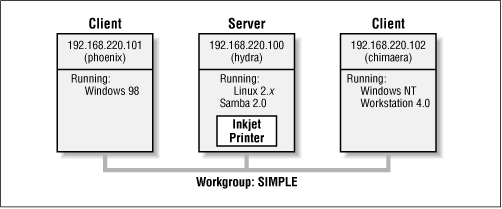
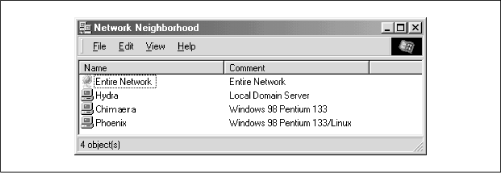
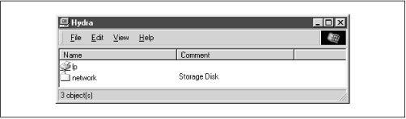
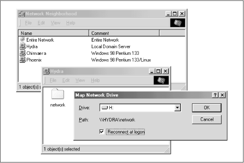
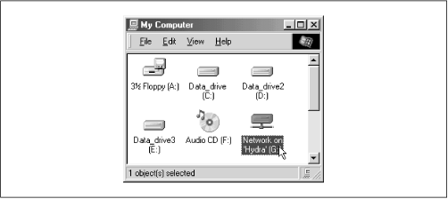
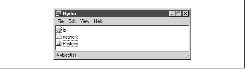
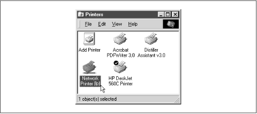

Using Samba
Robert Eckstein, David Collier-Brown, Peter Kelly1st Edition November 1999
1-56592-449-5, Order Number: 4495
416 pages, $34.95
|
|
|
|
|
Using SambaRobert Eckstein, David Collier-Brown, Peter Kelly1st Edition November 1999 1-56592-449-5, Order Number: 4495 416 pages, $34.95 |
1.2 What Can Samba Do For Me?
As explained earlier, Samba can help Windows and Unix machines coexist in the same network. However, there are some specific reasons why you might want to set up a Samba server on your network:
You don't want to pay for - or can't afford - a full-fledged Windows NT server, yet you still need the functionality that one provides.
You want to provide a common area for data or user directories in order to transition from a Windows server to a Unix one, or vice versa.
You want to be able to share printers across both Windows and Unix workstations.
Let's take a quick tour of Samba in action. Assume that we have the following basic network configuration: a Samba-enabled Unix machine, to which we will assign the name
hydra, and a pair of Windows clients, to which we will assign the namesphoenixandchimaera, all connected via a local area network (LAN). Let's also assume thathydraalso has a local inkjet printer connected to it,lp, and a disk share namednetwork- both of which it can offer to the other two machines. A graphic of this network is shown in Figure 1.1.Figure 1.1: A simple network setup with a Samba server
In this network, each of the computers listed share the same workgroup. A workgroup is simply a group nametag that identifies an arbitrary collection of computers and their resources on an SMB network. There can be several workgroups on the network at any time, but for our basic network example, we'll have only one: the SIMPLE workgroup.
1.2.1 Sharing a Disk Service
If everything is properly configured, we should be able to see the Samba server,
hydra, through the Network Neighborhood of thephoenixWindows desktop. In fact, Figure 1.2 shows the Network Neighborhood of thephoenixcomputer, includinghydraand each of the computers that reside in the SIMPLE workgroup. Note the Entire Network icon at the top of the list. As we just mentioned, there can be more than one workgroup on an SMB network at any given time. If a user clicks on the Entire Network icon, he or she will see a list of all the workgroups that currently exist on the network.Figure 1.2: The Network Neighborhood directory
We can take a closer look at the
hydraserver by double-clicking on its icon. This contactshydraitself and requests a list of its shares - the file and printer resources - that the machine provides. In this case, there is a printer entitledlpand a disk share entitlednetworkon the server, as shown in Figure 1.3. Note that the Windows display shows hostnames in mixed case (Hydra). Case is irrelevant in hostnames, so you may see hydra, Hydra, and HYDRA in various displays or command output, but they all refer to a single system. Thanks to Samba, Windows 98 sees the Unix server as a valid SMB server, and can access thenetworkfolder as if it were just another system folder.Figure 1.3: Shares available on the hydra sever as viewed from phoenix
One popular feature of Windows 95/98/NT is that you can map a letter-drive to a known network directory using the Map Network Drive option in the Windows Explorer.[ 3] Once you do so, your applications can access the folder across the network with a standard drive letter. Hence, you can store data on it, install and run programs from it, and even password-protect it against unwanted visitors. See Figure 1.4 for an example of mapping a letter-drive to a network directory.
[3] You can also right-click on the shared resource in the Network Neighborhood, and then select the Map Network Drive menu item.
Figure 1.4: Mapping a network drive to a Windows letter-drive
Take a look at the Path: entry in the dialog box of Figure 1.4. An equivalent way to represent a directory on a network machine is by using two backslashes, followed by the name of the networked machine, another backslash, and the networked directory of the machine, as shown below:
\\network-machine\directoryThis is known as the UNC (Universal Naming Convention) in the Windows world. For example, the dialog box in Figure 1.4 represents the network directory on the
hydraserver as:\\HYDRA\networkIf this looks somewhat familiar to you, you're probably thinking of uniform resource locators (URLs), which are addresses that web browsers such as Netscape Navigator and Internet Explorer use to resolve machines across the Internet. Be sure not to confuse the two: web browsers typically use forward slashes instead of back slashes, and they precede the initial slashes with the data transfer protocol (i.e., ftp, http) and a colon (:). In reality, URLs and UNCs are two completely separate things.
Once the network drive is set up, Windows and its programs will behave as if the networked directory was a fixed disk. If you have any applications that support multiuser functionality on a network, you can install those programs on the network drive.[ 4] Figure 1.5 shows the resulting network drive as it would appear with other storage devices in the Windows 98 client. Note the pipeline attachment in the icon for the G: drive; this indicates that it is a network drive instead of a fixed drive.
[4] Be warned that many end-user license agreements forbid installing a program on a network such that multiple clients can access it. Check the legal agreements that accompany the product to be absolutely sure.
Figure 1.5: The Network directory mapped to the client letter-drive G
From our Windows NT Workstation machine,
chimaera, Samba looks almost identical to Windows 98. Figure 1.6 shows the same view of thehydraserver from the Windows NT 4.0 Network Neighborhood. Setting up the network drive using the Map Network Drive option in Windows NT Workstation 4.0 would have identical results as well.Figure 1.6: Shares available on hydra (viewed from chimaera)
1.2.2 Sharing a Printer
You probably noticed that the printer
lpappeared under the available shares forhydrain Figure 1.3. This indicates that the Unix server has a printer that can be shared by the various SMB clients in the workgroup. Data sent to the printer from any of the clients will be spooled on the Unix server and printed in the order it is received.Setting up a Samba-enabled printer on the Windows side is even easier than setting up a disk share. By double-clicking on the printer and identifying the manufacturer and model, you can install a driver for this printer on the Windows client. Windows can then properly format any information sent to the network printer and access it as if it were a local printer (we show you how to do this later in the chapter). Figure 1.7 shows the resulting network printer in the Printers window of Windows 98. Again, note the pipeline attachment below the printer, which identifies it as being on a network.
Figure 1.7: A network printer available on hydra (viewed from chimaera)
1.2.2.1 Seeing things from the Unix side
As mentioned earlier, Samba appears in Unix as a set of daemon programs. You can view them with the Unix
psandnetstatcommands, you can read any messages they generate through custom debug files or the Unixsyslog(depending on how Samba is set up), and you can configure it from a single Samba properties file: smb.conf. In addition, if you want to get an idea of what each of the daemons are doing, Samba has a program called smbstatus that will lay it all on the line. Here is how it works:#smbstatusSamba version 2.0.4 Service uid gid pid machine ---------------------------------------------- network davecb davecb 7470 phoenix (192.168.220.101) Sun May 16 network davecb davecb 7589 chimaera (192.168.220.102) Sun May 16 Locked files: Pid DenyMode R/W Oplock Name -------------------------------------------------- 7589 DENY_NONE RDONLY EXCLUSIVE+BATCH /home/samba/quicken/inet/common/system/help.bmp Sun May 16 21:23:40 1999 7470 DENY_WRITE RDONLY NONE /home/samba/word/office/findfast.exe Sun May 16 20:51:08 1999 7589 DENY_WRITE RDONLY EXCLUSIVE+BATCH /home/samba/quicken/lfbmp70n.dll Sun May 16 21:23:39 1999 7589 DENY_WRITE RDWR EXCLUSIVE+BATCH /home/samba/quicken/inet/qdata/runtime.dat Sun May 16 21:23:41 1999 7470 DENY_WRITE RDONLY EXCLUSIVE+BATCH /home/samba/word/office/osa.exe Sun May 16 20:51:09 1999 7589 DENY_WRITE RDONLY NONE /home/samba/quicken/qversion.dll Sun May 16 21:20:33 1999 7470 DENY_WRITE RDONLY NONE /home/samba/quicken/qversion.dll Sun May 16 20:51:11 1999 Share mode memory usage (bytes): 1043432(99%) free + 4312(0%) used + 832(0%) overhead = 1048576(100%) totalThe Samba status from this output provides three sets of data, each divided into separate sections. The first section tells which systems have connected to the Samba server, identifying each client by its machine name (
phoenixandchimaera) and IP address. The second section reports the name and status of the files that are currently in use on a share on the server, including the read/write status and any locks on the files. Finally, Samba reports the amount of memory it has currently allocated to the shares that it administers, including the amount actively used by the shares plus additional overhead. (Note that this is not the same as the total amount of memory that the smbd or nmbd processes are using.)Don't worry if you don't understand these statistics; they will become easier to understand as you move through the book.
 |
 |
 |
| 1.1 What is Samba? |
 | 1.3 Getting Familiar with a SMB/CIFS Network |
Back to: Using Samba
© 1999, O'Reilly & Associates, Inc.